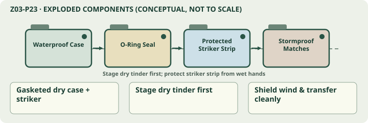

Z03-P23 · Fire and ignition · New manuscript
Use stormproof and waterproof matches reliably in wind and damp air
Protect match heads and striker strips from moisture and shield brief flames cleanly on authorized sites.
When it applies · Igniting staged dry tinder in breezy or damp conditions where open fires or stoves are permitted.
Equipment · Waterproof case with stormproof matches, dry spare striker strip and pre-staged tinder/kindling.

Actions
- Store stormproof matches and their dedicated striker strips inside a gasketed waterproof container—even waterproof matches fail if the striker surface dissolves in water.[C11, ED]
- Stage tinder and kindling completely first, turn your body to block gusts and strike firmly away from your body and away from the open match container.[C03, C11, C02]
- Hold the burning match steadily beneath the fine dry tinder base until flame transfers, then dispose of the cooled spent match only inside the cleared fire ring or pack out cold.[C03, C04, ED]
Failure recognition · Opening a match case with wet hands, ruining the sole striker strip, or lighting matches one by one before kindling is staged.[C11, C03]
Verify · Confirm the container gasket seals tightly, a dry backup striker sits inside and tinder is fully staged before striking.[C11, C03, ED]
Stop or change course · Stop burning through remaining emergency matches if tinder is too wet to catch; dry/prepare better tinder or shift to the no-fire warmth plan.[C03, C08, C11]
Evidence and editorial notes
- C02 · USDA Forest Service / Smokey Bear · Smokey Bear’s Campfire Safety Guide (agency PDF)
- Section: Build your campfire; choose a location · Conditions: Where campfires are currently permitted
Support: Use an established fire ring where required or available. Protect the area from nearby combustible materials, avoid windy conditions and keep water ready.
Limitations: Site clearances vary by fuel load, slope, and wind; no universal safe radius fits all terrain. · Conflicting evidence: None; aligns with USFS-FIRE.
Editorial note: Grounds site-selection and ring-preparation procedures. · Specialist reviewer: Fire prevention and land management
Primary source · checked 2026-11-24 - C03 · USDA Forest Service / Smokey Bear · Smokey Bear’s Campfire Safety Guide (agency PDF)
- Section: Build your campfire > Tinder, kindling, fuel · Conditions: Outdoor authorized campfire
Support: Dry tinder, small kindling and larger fuel serve different roles. Gather materials before ignition. Avoid accelerants.
Limitations: Species availability and moisture content vary by season and local collection rules. · Conflicting evidence: None; separates material function from unverified species claims.
Editorial note: Used to stage three-tier fuel geometry without prescribing specific live trees. · Specialist reviewer: Fire prevention
Primary source · checked 2026-11-24 - C04 · USDA Forest Service / Smokey Bear · Smokey Bear’s Campfire Safety Guide (agency PDF)
- Section: Maintain and extinguish a campfire · Conditions: Occupied campfire, water and tools available
Support: Stay with the fire. Drown, stir and add water again until cool. Leaving visible embers or merely covering them is unsafe.
Limitations: Deep duff or peat soils can hold smoldering embers underground even after surface ash cools. · Conflicting evidence: None; prohibits dirt-only burial as primary extinguishment.
Editorial note: Enforces drown-stir-feel-cold cycle before site departure. · Specialist reviewer: Fire prevention and land management
Primary source · checked 2026-11-24 - C08 · NWS · What To Do If You're Caught in a Winter Storm (current web edition)
- Section: Outside > If there is no shelter nearby · Conditions: Stranded outdoors during a winter storm
Support: Seek shelter and block wind and wet exposure. Reduce heat loss from contact with snow or ground.
Limitations: Does not guarantee overnight survival without adequate insulation or rescue. · Conflicting evidence: None; reinforces no-fire exposure control priority.
Editorial note: Anchors no-fire fallback when ignition fails or is banned. · Specialist reviewer: Cold-weather shelter specialist
Primary source · checked 2026-11-24 - C11 · NPS · Ten Essentials (current web edition)
- Section: Fire and illumination · Conditions: Outdoor emergency kit
Support: Carry a dependable ignition option and protect it from moisture. Carry a separate light.
Limitations: Disposable butane lighters lose vapor pressure in freezing cold; matches fail when damp. · Conflicting evidence: None; supports redundant dry ignition kit planning.
Editorial note: Keeps lighting independent of fire-building. · Specialist reviewer: Field equipment and fire prevention
Primary source · checked 2026-11-24
Source lineage · NPS Ten Essentials and Smokey Bear guide; new manuscript · Classification · New manuscript.